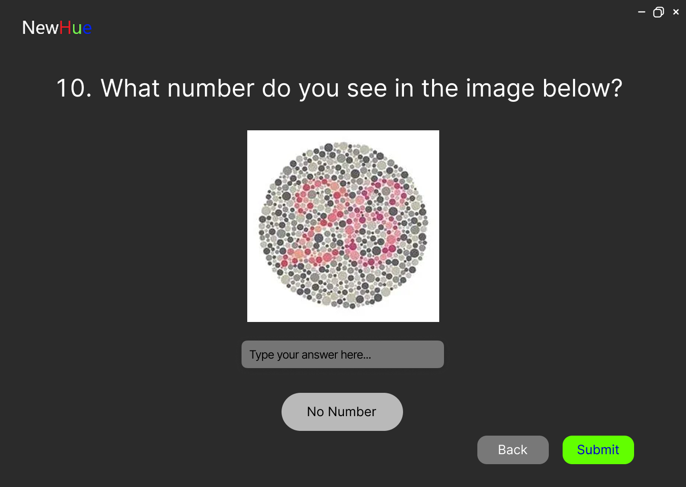
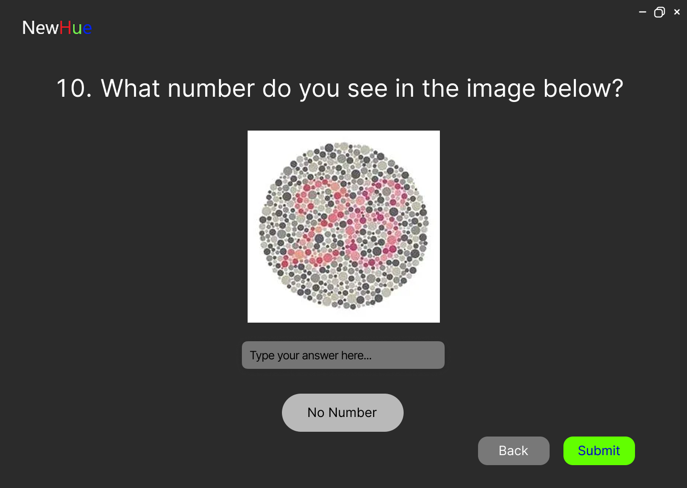

Prototyping
We used Figma to create a high-fidelity prototype of our colorblind accessibility app. This prototype showcases the full range of functionality, visual design, and user flow. Below are several key screens from the design that highlight major features and interface components.
Tools Used
- Figma for interactive mockups and layout design
- Photoshop for asset editing
Key Screens from the Prototype
- Login/Register Pages: Allows users to login and register for an account to share profiles and opinions
- Setup Screen: Introduction and initial configuration for new users
- Colorblind Test: Interactive test using Ishihara plates to determine user's type of color blindness
- Create Profile: Allows users to set and preview filter settings (e.g., color boost, invert)
- Community Profiles: Explore, use, and contribute user-created filter profiles
- Settings Pages: Adjust general, account, and privacy preferences
- View Profiles: List of all saved or starred profiles for quick access
 



Prototype Feedback
Through peer feedback and usability observation, we discovered that users appreciated the dark mode, filter previews, and simplicity of toggles. Suggestions included larger tooltips and more contrast indicators for better readability.